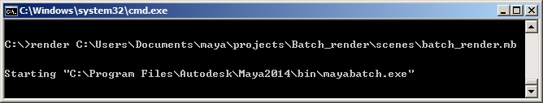
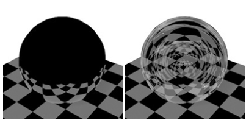
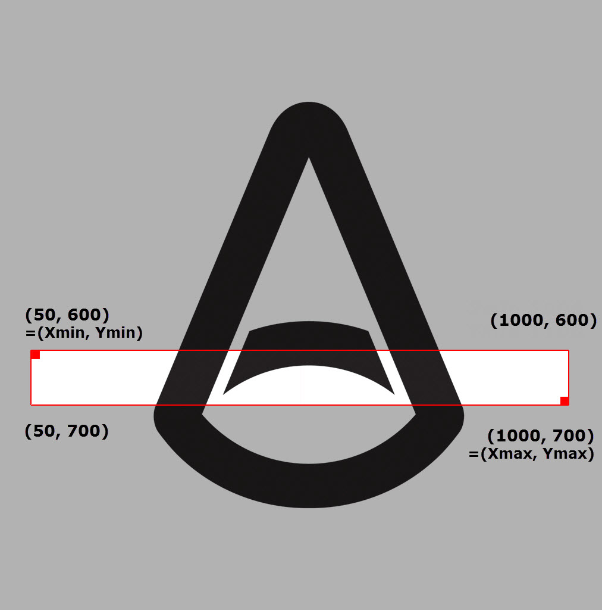

进行批渲染时，需要有 Arnold 许可才能去除水印。如果您没有 Arnold 许可（需单独购买），请使用“渲染 > 渲染序列”(Render > Render Sequence)。
您可以将 Maya 批渲染器与 Arnold 结合使用来渲染帧序列。要执行此操作，请在 Maya 中使用“渲染 > 批渲染”(Render > Batch Render)命令，或在命令行上使用命令行渲染器。使用命令行渲染器时，您可以使用批渲染标志来更改场景中的渲染设置，而不必每次都打开场景。
建议的方法是确保已有一个系统变量指向包含 Render.exe 文件的文件夹。在 Windows 中，此操作可以通过以下方法来完成：
转到“控制面板”>“系统”>“高级系统设置”>“环境变量”。
转到“系统变量”， 然后转到名为“Path”的变量。单击“编辑”。
在“变量值” 下，您应看到若干路径，各个路径之间用分号分隔。在此处添加指向渲染器的路径。默认情况下，它应类似于 C:\Program Files\Autodesk\Maya2018\bin
单击“确定”。
另一种方法是在命令行中键入“Render.exe”的完整路径：
"C:\Program Files\Autodesk\Maya2018\bin\Render.exe" C:\Users\Documents\maya\projects\Batch_render\scenes\batch_render.mb
export PATH=$PATH:/usr/autodesk/maya2018-x64/bin
export PATH=$PATH:/Applications/Autodesk/maya2018/Maya.app/Contents/bin
保存 Maya 文件以进行批渲染之前，请确保项目设置正确无误，渲染器已设置为 Arnold，并且已在“渲染设置”(Render Settings)窗口中正确设置了摄影机（和其他设置）。
要使用在场景文件中指定的渲染器进行渲染，请键入 render，后跟任意批渲染标志，接着是 Maya 场景路径名：
Render -s 1 -e 10 C:\Users\Documents\maya\projects\Batch_render\scenes\batch_render.mb 
在 Windows Shell 中进行 Maya 场景批渲染
请记住，可以使用 'Render --help -r arnold' 列出渲染标志
要在渲染时使用 USD 摄影机，请使用以下命令行：Render -r arnold -cam |stage1|stageShape1,/path/to/camera
可以使用以下命令导出 .ass 文件：
arnoldExportAss -sf 1 -ef 10 -f "/tmp/example.ass" 可以使用以下命令针对一个帧导出 .ass 文件并执行批渲染：
arnoldExportAss -f <filename>
arnoldRender -b;
在这两种情况下，您都需要在前面加上以下命令：
currentTime <frameNum>; 例如：
currentTime 1; arnoldExportAss -f "/tmp/scene.001.ass"; 以下示例显示了具体的 Arnold 批渲染标志（其中 parameter 是批渲染标志）：
Render -r arnold [ai:parameter](http://aiparameter/) C:\Users\Documents\maya\projects\Batch_render\scenes\batch_render.mb |
|---|
如果需要更改场景中的折射光线深度，可以使用以下命令：
Render -r arnold ai : rfr 0 C:\Users\Documents\maya\projects\Batch_render\scenes\batch_render.mb |
|---|
其中，ai:r fr 0' 将折射深度设置为 0。

ai:rfr 0（左）。ai:rfr 4（右）。
使用 arnoldRender 命令可以渲染单个帧或一定范围内的帧。您可以指定多个不同的帧或帧范围。各项之间需要用分号 ; 或空格字符进行分隔。请不要混合使用这两种分隔符。定义帧范围时，必须使用 .. 字符串分隔开始帧和结束帧。为帧范围添加 : 并在冒号后额外添加一个数字时，可以定义帧的步长。下面的示例也可以使用 ; 来代替空格作为分隔符：
-seq "1 2 3" - 渲染帧 1、2 和 3。
-seq "1 3..6" - 渲染帧 1 以及帧 3 和 6 之间步长为 1 的帧。
-seq "2 4..7 15..27:4" - 渲染帧 2、帧 4 至帧 7 以及帧 15 和 27 之间步长为 4 的帧。
如果需要渲染图像的一个区域，则可以使用 -reg 标志，该标志的语法为 -reg Xmin Xmax Ymin Ymax：
Render -r arnold -reg 50 1000 600 700 C:\Users\Documents\maya\projects\Batch_render\scenes\batch_render.mb |
|---|

-reg 设置一个自定义矩形区域来渲染（(Xmin, Ymin) 到 (Xmax, Ymax)）
默认情况下，MtoA 安装程序会将 Arnold 渲染器描述文件 (arnoldRenderer.xml) 复制到 Maya 安装目录中。
但是，如果手动安装 MtoA 或安装程序出于某些原因而无法复制渲染器描述文件，则尝试执行命令行渲染时会出现以下错误：
Cannot open renderer description file "arnoldRenderer.xml" 如果显示此消息，您需要将 MAYA_RENDER_DESC_PATH 环境变量设置为指向 arnoldRenderer.xml，或将 arnoldRenderer.xml 复制到 Maya 安装目录。您可以在 MtoA 安装目录的根文件夹中找到 arnoldRenderer.xml。